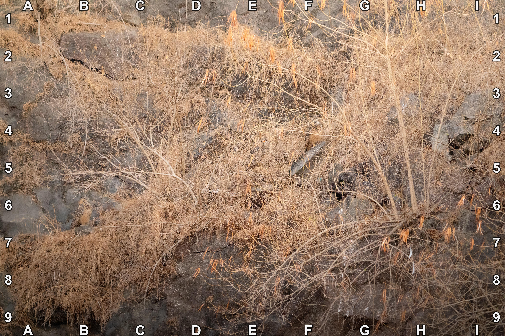
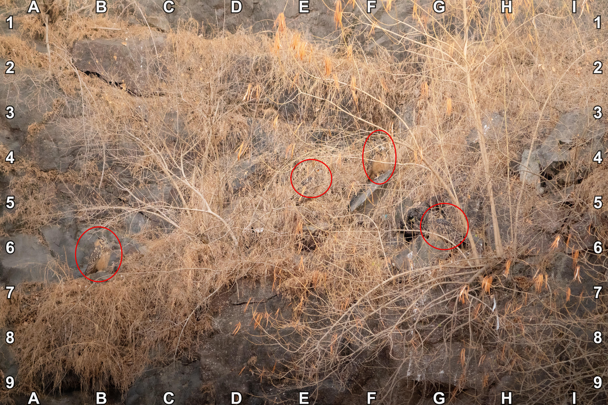

🔎 #90 - Parliament Peek-a-boo 🦉🦉🦉🦉 🔎 #90 - Parliament Peek-a-boo 🦉🦉🦉🦉 March 28, 2026  Did you know… A group of owls is called a parliament ❓Hints 👀 there are 4 owls 🎯 Location 👀 ⚠️ Spoilers ahead! Tap/click to continue to the object location ⚠️  🔎 #89 - Silly Goose 🔎 #91 - Nail that wasnt nailed on 💅